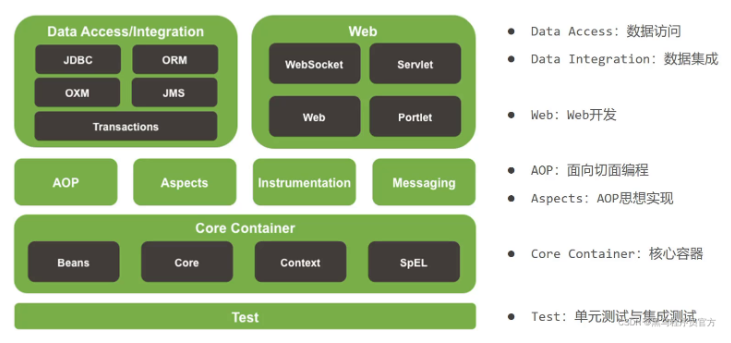
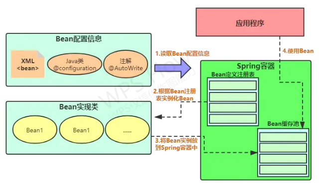
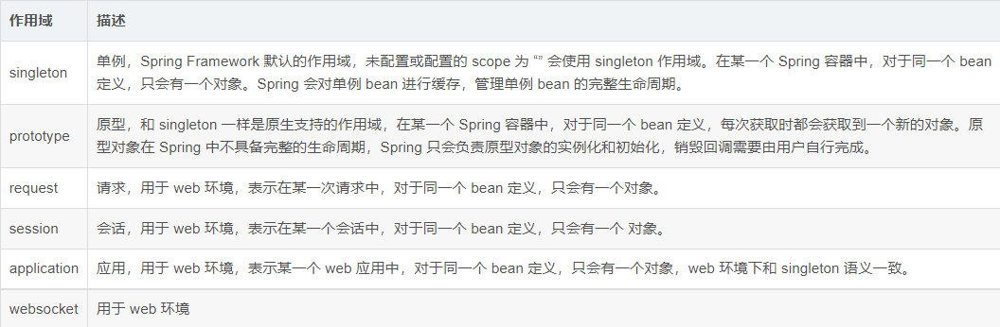
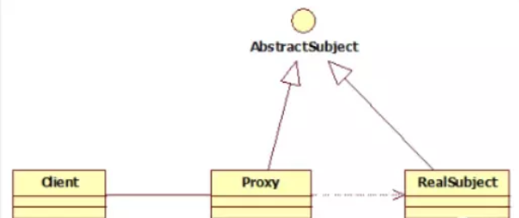
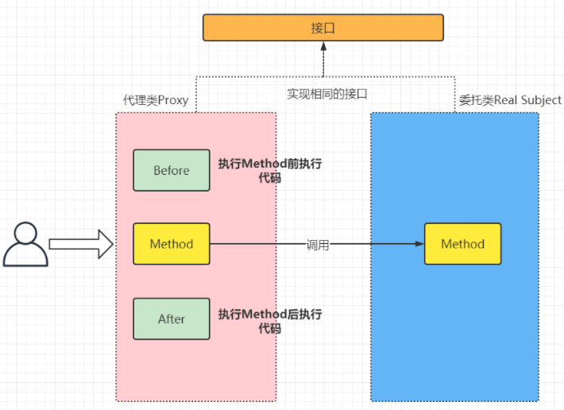
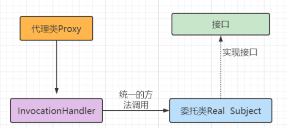
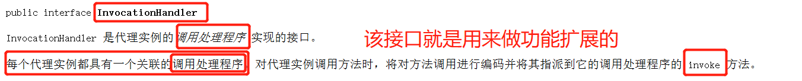
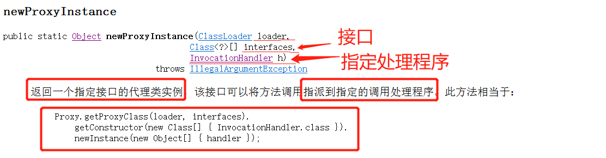
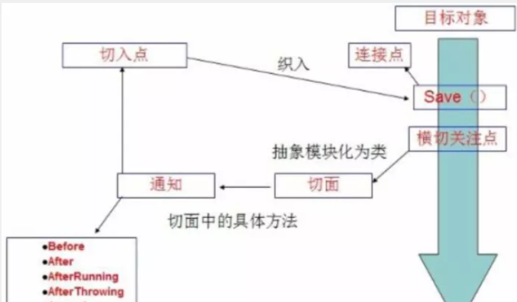
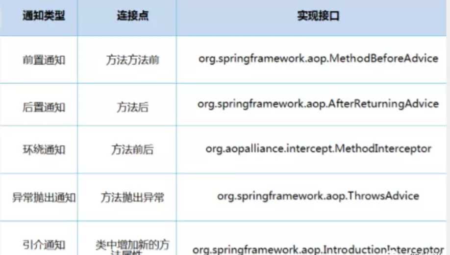

Spring Note复习了许多没用到过的知识23333 实训第二周笔记
Spring概述及IOC理论 Spring概述 Spring是一款优秀且功能强大的框架，它主要优势在于简化开发和框架整合。
开源免费框架、容器
轻量级框架，非侵入式
控制反转IOC，面向切面Aop
对事物支持，对框架支持
…….
官网地址
GitHub
Spring组成 
Spring框架是一个分层框架，由不同的模块组成。Spring模块构建在核心容器之上，核心容器定义了创建、配置和管理bean的方式。
Spring Boot于Spring Cloud
Spring Boot是Spring的快速配置脚手架，可以基于Spring Boot快速开发单个微服务。专注于快速、方便集成单个微服务个体。
Spring Cloud基于Spring Boot实现，关注于全局的服务治理框架。
Spring Boot的理念是约束优于配置，很多集成方案是已经选择好的，不需要配置。
Spring Cloud很大一部分是基于Spring Boot实现。
IOC IOC(Inversion Of Control) 控制反转
使用对象时，由主动new对象转变为由外部提供对象，在此过程中对象创建控制权由程序转移到外部，这个思想被称为控制反转。
IOC分析 为什么需要控制反转？
当我们需要实现这样的接口
1 2 3 public interface UserDao { void getUser () ; }
定义了不同数据库的实现类
1 2 3 4 5 6 public class UserDaoImpl implements UserDao { @Override public void getUser () { System.out.println("mysql获取用户数据" ); } }
1 2 3 4 5 6 public class UserDaoOracleImpl implements UserDao { @Override public void getUser () { System.out.println("oracle获取用户数据" ); } }
这样的情况下，加入我们想使用不同的实现类，必须在Service层修改对应的实现类，非常的麻烦。
1 2 3 4 5 6 7 @Test public void getUserTest () { UserDao userDao = new UserDaoImpl (); UserDao UserDaoOracle = new UserDaoOracleImpl (); userDao.getUser(); UserDaoOracle.getUser(); }
如何改变这个情况呢？
1 2 3 4 5 6 7 8 9 10 11 12 public class UserServiceImpl implements UserService { UserDao dao; @Override public void setUserDao (UserDao userDao) { dao = userDao; } @Override public void getUser () { dao.getUser(); } }
我们用一个类内置一个接口类对象，通过set方法动态设置实现类，再通过这个类调用实现类方法。
1 2 3 4 5 6 7 8 @Test public void getUser () { UserService userService = new UserServiceImpl (); userService.setUserDao(new UserDaoSqlServerImpl ()); userService.getUser(); userService.setUserDao(new UserDaoOracleImpl ()); userService.getUser(); }
这样我们就可以通过set注入修改实现类，而不是只有在创建时由程序主动控制创建。程序变为了被动接收对象，而调用者可以自行控制对象创建。我们可以不在管理对象的创建，而是着重于业务实现，大大降低了耦合性。
Spring IOC机制 IOC是Spring核心内容，它通过多种方式实现IOC，可以使用XML配置，也可以使用注解。
通过DI(Dependency Injection)，即依赖注入实现IOC：组件之间的依赖关系由容器在运行时决定，由容器动态的将某个依赖关系注入到组件之内。
Spring容器在初始化时先读取配置文件，根据配置文件或元数据创建与组织对象存入容器中，程序使用时再从IOC容器中取出需要的对象。

控制反转是一种通过描述（XML或注解）并通过第三方去生产或获取特定对象的方式。在Spring中实现控制反转的是IOC容器，其实现方法是依赖注入（Dependency Injection,DI）。
Spring入门 Hello Spring 导入相关Jar包 通过maven自动导入相关依赖
1 2 3 4 5 <dependency > <groupId > org.springframework</groupId > <artifactId > spring-webmvc</artifactId > <version > 5.3.20</version > </dependency >
编写代码 编写实体类
1 2 3 4 5 6 7 8 9 10 11 12 13 14 15 16 17 18 public class Hello { private int id; private String name; public Hello () { System.out.println("无参构造" ); } public Hello (int id, String name) { this .id = id; this .name = name; System.out.println("有参构造" ); } public void show () { System.out.println("我的id是" +id+"我的姓名是" +name); } }
创建spring配置文件
1 2 3 4 5 6 7 8 9 10 <?xml version="1.0" encoding="UTF-8" ?> <beans xmlns ="http://www.springframework.org/schema/beans" xmlns:xsi ="http://www.w3.org/2001/XMLSchema-instance" xsi:schemaLocation ="http://www.springframework.org/schema/beans http://www.springframework.org/schema/beans/spring-beans.xsd" > <bean id ="user" class ="com.day1.pojo.Hello" > <property name ="id" value ="1" /> <property name ="name" value ="张三" /> </bean > </beans >
测试
1 2 3 4 5 6 @Test public void getBean () { ApplicationContext applicationContext = new ClassPathXmlApplicationContext ("applicationContext.xml" ); Hello user = (Hello)applicationContext.getBean("user" ); user.show(); }
总结
Hello对象被交由了Spring创建，并存入IOC容器
Hello对象在调用时从IOC容器中取出
控制反转体现：对象创建不由程序控制，而是交由Spring创建，再从容器中获取
修改IOC分析案例 将不同的实现方法全部注入在容器中，只需要在xml中对service实现类属性进行修改，Spring容器便会为我们创建指定好的Service
1 2 3 4 5 6 7 8 9 10 11 12 13 14 15 16 17 18 19 20 21 <?xml version="1.0" encoding="UTF-8" ?> <beans xmlns="http://www.springframework.org/schema/beans" xmlns:xsi="http://www.w3.org/2001/XMLSchema-instance" xsi:schemaLocation="http://www.springframework.org/schema/beans http://www.springframework.org/schema/beans/spring-beans.xsd" > <!--不同实现方法--> <bean id="UserDaoImpl" class="com.day1.dao.UserDaoImpl" ></bean> <bean id="UserDaoOracleImpl" class="com.day1.dao.UserDaoOracleImpl" ></bean> <bean id="UserDaoSqlServerImpl" class="com.day1.dao.UserDaoSqlServerImpl" ></bean> <!--Service实现类--> <bean id="UserServiceImlp" class="com.day1.service.UserServiceImpl" > <!--使用ref去引用其他bean对象--> <property name="userDao" ref="UserDaoOracleImpl" /> </bean> </beans> 测试方法 @Test public void getService () { ApplicationContext applicationContext = new ClassPathXmlApplicationContext ("applicationContext.xml" ); UserServiceImpl userService = applicationContext.getBean(UserServiceImpl.class); userService.getUser(); }
#### 2.2 IOC创建对象方式
User对象
1 2 3 4 5 6 7 8 9 10 11 12 13 14 15 16 17 18 public class Hello { private int id; private String name; public Hello () { System.out.println("无参构造" ); } public Hello (int id, String name) { this .id = id; this .name = name; System.out.println("有参构造" ); } public void show () { System.out.println("我的id是" +id+"我的姓名是" +name); } }
通过无参构造方法创建 1 2 <bean id ="user" class ="com.day1.pojo.Hello" > </bean >
通过有参构造方法创建 1 2 3 4 5 6 7 8 9 10 11 <bean id="user" class="com.day1.pojo.Hello" > <!-- 通过index指定--> <constructor-arg index="0" type="int" value="1" /> <constructor-arg index="1" type="java.lang.String" value="张三" /> <!-- 通过name指定--> <constructor-arg name="id" value="1" /> <constructor-arg name="name" value="小司马" /> <!-- 通过type指定--> <constructor-arg type="int" value="1" /> <constructor-arg type="java.lang.String" value="张三" /> </bean>
Spring一些相关配置 别名 1 2 <alias name ="user" alias ="user1" />
Bean配置 1 2 3 4 5 6 7 8 9 10 11 12 <bean id ="user" name ="user1;user2;user3" class ="com.day1.pojo.Hello" > </bean >
import 可以通过import导入其他spring配置文件
1 <import resource ="{path}/beans.xml" />
依赖注入(DI) DI(Dependency Injection)
依赖：指Bean对象的创建依赖于容器，Bean对象的依赖资源
注入：指Bean对象所依赖的资源，由容器来设置和装配
构造器注入 Java对象
1 2 3 4 5 6 7 8 9 10 11 12 13 14 15 16 17 18 19 20 21 package com.day1.pojo;import lombok.Data;@Data public class Hello { private int id; private String name; public Hello () { System.out.println("无参构造" ); } public Hello (int id, String name) { this .id = id; this .name = name; System.out.println("有参构造" ); } public void show () { System.out.println("我的id是" +id+"我的姓名是" +name); } }
无参构造 1 2 3 <bean id ="user" name ="user1;user2;user3" class ="com.day1.pojo.Hello" > </bean >
有参构造 1 2 3 4 5 6 7 8 9 10 11 12 13 <bean id ="user" name ="user1;user2;user3" class ="com.day1.pojo.Hello" > <constructor-arg name ="id" value ="1" /> <constructor-arg name ="name" value ="小司马" /> </bean >
Set注入 Java对象
1 2 3 4 5 6 7 8 9 10 11 12 13 14 15 16 17 18 19 20 21 22 23 24 25 package com.pojo;import lombok.AllArgsConstructor;import lombok.Data;import lombok.NoArgsConstructor;import java.util.List;import java.util.Map;import java.util.Properties;import java.util.Set;@Data @AllArgsConstructor @NoArgsConstructor public class Student { private String name; private boolean flag; private Address address; private String[] books; private List<String> hobbys; private Map<String,Object> card; private Set<String> games; private String wife; private Properties info; }
各种类型的set注入
1 2 3 4 5 6 7 8 9 10 11 12 13 14 15 16 17 18 19 20 21 22 23 24 25 26 27 28 29 30 31 32 33 34 35 36 37 38 39 40 41 42 43 44 45 46 47 48 49 50 51 52 53 54 55 56 <?xml version="1.0" encoding="UTF-8" ?> <beans xmlns ="http://www.springframework.org/schema/beans" xmlns:xsi ="http://www.w3.org/2001/XMLSchema-instance" xsi:schemaLocation ="http://www.springframework.org/schema/beans http://www.springframework.org/schema/beans/spring-beans.xsd" > <bean id ="address" class ="com.pojo.Address" > <property name ="name" value ="芜湖" /> </bean > <bean id ="student" class ="com.pojo.Student" > <property name ="name" value ="大司马" /> <property name ="flag" value ="true" /> <property name ="address" ref ="address" /> <property name ="books" > <array > <value > 红楼梦</value > <value > 挪威的森林</value > <value > 水许船</value > </array > </property > <property name ="hobbys" > <list > <value > LOL</value > <value > 守望先锋</value > </list > </property > <property name ="card" > <map > <entry key ="身份证" value ="12312312" /> <entry key ="银行卡" value ="55566" /> </map > </property > <property name ="games" > <set > <value > 守望先锋</value > <value > LOL</value > </set > </property > <property name ="wife" > <null /> </property > <property name ="info" > <props > <prop key ="url" > www.baidu.com</prop > <prop key ="username" > root</prop > </props > </property > </bean > </beans >
Bean作用域 在Spring中，那些组成应用程序的主体及由Spring IOC容器所管理的对象，被称为Bean。也就是说，Bean就是由IOC容器初始化、装配及管理的对象。
几种作用域中，request与session作用域仅在基于web的应用中使用（不必关心你所采用的web应用框架），只能用于基于web的Spring ApplicationContext环境 。
Scope作用域 
Singleton 当一个bean的作用域为Singleton，那么Spring IoC容器中只会存在一个共享的bean实例，并且所有对bean的请求，只要id与该bean定义相匹配，则只会返回bean的同一实例。Singleton是单例类型，就是在创建起容器时就同时自动创建了一个bean的对象，不管你是否使用，他都存在了，每次获取到的对象都是同一个对象。注意，Singleton作用域是Spring中的缺省作用域。要在XML中将bean定义成singleton，可以这样配置：
1 <bean id ="ServiceImpl" class ="cn.csdn.service.ServiceImpl" scope ="singleton" >
测试：
1 2 3 4 5 6 7 @Test public void test03 () { ApplicationContext context = new ClassPathXmlApplicationContext ("applicationContext.xml" ); User user = (User) context.getBean("user" ); User user2 = (User) context.getBean("user" ); System.out.println(user==user2); }
Prototype 当一个bean的作用域为Prototype，表示一个bean定义对应多个对象实例。Prototype作用域的bean会导致在每次对该bean请求（将其注入到另一个bean中，或者以程序的方式调用容器的getBean()方法）时都会创建一个新的bean实例。Prototype是原型类型，它在我们创建容器的时候并没有实例化，而是当我们获取bean的时候才会去创建一个对象，而且我们每次获取到的对象都不是同一个对象。根据经验，对有状态的bean应该使用prototype作用域，而对无状态的bean则应该使用singleton作用域。在XML中将bean定义成prototype，可以这样配置：
1 2 3 <bean id ="account" class ="com.foo.DefaultAccount" scope ="prototype" /> 或者 <bean id ="account" class ="com.foo.DefaultAccount" singleton ="false" />
Request 当一个bean的作用域为Request，表示在一次HTTP请求中，一个bean定义对应一个实例；即每个HTTP请求都会有各自的bean实例，它们依据某个bean定义创建而成。该作用域仅在基于web的Spring ApplicationContext情形下有效。考虑下面bean定义：
1 <bean id ="loginAction" class =cn.csdn.LoginAction " scope ="request" />
针对每次HTTP请求，Spring容器会根据loginAction bean的定义创建一个全新的LoginAction bean实例，且该loginAction bean实例仅在当前HTTP request内有效，因此可以根据需要放心的更改所建实例的内部状态，而其他请求中根据loginAction bean定义创建的实例，将不会看到这些特定于某个请求的状态变化。当处理请求结束，request作用域的bean实例将被销毁。
Session 当一个bean的作用域为Session，表示在一个HTTP Session中，一个bean定义对应一个实例。该作用域仅在基于web的Spring ApplicationContext情形下有效。考虑下面bean定义：
1 <bean id ="userPreferences" class ="com.foo.UserPreferences" scope ="session" />
针对某个HTTP Session，Spring容器会根据userPreferences bean定义创建一个全新的userPreferences bean实例，且该userPreferences bean仅在当前HTTP Session内有效。与request作用域一样，可以根据需要放心的更改所创建实例的内部状态，而别的HTTP Session中根据userPreferences创建的实例，将不会看到这些特定于某个HTTP Session的状态变化。当HTTP Session最终被废弃的时候，在该HTTP Session作用域内的bean也会被废弃掉。
自动装配
自动装配是使用spring满足bean依赖的一种方法
spring会在应用上下文中为某个bean寻找其依赖的bean。
Spring中bean有三种装配机制，分别是：
在xml中显式配置；
在java中显式配置；
隐式的bean发现机制和自动装配。（注解）
如何开启注解式自动装配？
组件扫描（component scanning）：spring会自动发现应用上下文中所创建的bean
自动装配（autowring）：spring自动满足bean组件之间的依赖，即IOC/DI
xml显示配置 byType autowired=”byName” 按照名字自动装配
1 2 3 4 5 6 <bean id ="cat" class ="com.pojo.Cat" /> <bean id ="dog" class ="com.pojo.Dog" /> <bean id ="user" class =" .pojo.User" autowire ="byName" > <property name ="str" value ="小司马" /> </bean >
假若我们把id改为与user属性不符的情况，例如catxxx，dogxxx，再次测试，将在User内找不到对应的setCatxxx方法，导致空指针异常。
小结：
当一个bean节点带有 autowire byName的属性时。
将查找其类中所有的set方法名，例如setCat，获得将set去掉并且首字母小写的字符串，即cat。
去spring容器中寻找是否有此字符串名称id的对象。
如果有，就取出注入；如果没有，就报空指针异常。
byName autowired=”byType” 按照名字自动装配
1 2 3 4 5 6 7 <bean id ="dog" class =" .pojo.Dog" /> <bean id ="cat" class =" .pojo.Cat" /> <bean id ="cat2" class =" .pojo.Cat" /> <bean id ="user" class =" .pojo.User" autowire ="byType" > <property name ="str" value ="小司马" /> </bean >
当我们按照以上配置运行，会发生异常NoUniqueBeanDefinitionException，因为Cat类型的bean对象并不唯一
假如我们将其中一个Cat类型注释，再次运行， 则会正常运行
Java显示配置 使用@Configuration注解
1 2 3 4 5 6 7 8 9 10 11 12 13 14 15 16 17 18 package com.pojo;import org.springframework.context.annotation.Bean;import org.springframework.context.annotation.Configuration;@Configuration public class MyConfig { @Bean Dog dog () { return new Dog (); } @Bean User user () { return new User (new Cat (),dog(),"测试" ); } }
测试方法
1 2 3 4 5 6 @Test public void test2 () { ApplicationContext context = new AnnotationConfigApplicationContext ("com.pojo" ); Dog dog = (Dog) context.getBean("dog" ); System.out.println(dog); }
注解隐式配置 推荐对非复杂对象使用注解隐式配置
首先在spring配置文件中开启属性注解支持
1 <context:annotation-config />
@Autowired
@Autowired是按类型自动装配，不支持id匹配 需要spring-aop包
1 2 3 4 5 6 7 8 9 10 11 12 13 14 15 16 17 18 19 20 21 package com.pojo;import lombok.AllArgsConstructor;import lombok.Data;import lombok.NoArgsConstructor;import org.springframework.beans.factory.annotation.Autowired;import org.springframework.beans.factory.annotation.Value;@Data @AllArgsConstructor @NoArgsConstructor public class User { @Autowired private Cat cat; @Autowired private Dog dog; @Value("张三") private String name; }
我们在User类内标注了@Autowired属性
1 2 3 4 5 6 7 8 9 10 11 12 13 14 15 16 <?xml version="1.0" encoding="UTF-8" ?> <beans xmlns ="http://www.springframework.org/schema/beans" xmlns:p ="http://www.springframework.org/schema/p" xmlns:context ="http://www.springframework.org/schema/context" xmlns:c ="http://www.springframework.org/schema/c" xmlns:xsi ="http://www.w3.org/2001/XMLSchema-instance" xsi:schemaLocation ="http://www.springframework.org/schema/beans http://www.springframework.org/schema/beans/spring-beans.xsd http://www.springframework.org/schema/context http://www.springframework.org/schema/context/spring-context.xsd" > <context:annotation-config /> <bean id ="cat2" class ="com.pojo.Cat" /> <bean id ="dog2" class ="com.pojo.Dog" /> <bean id ="user" class ="com.pojo.User" > </bean > </beans >
当测试中取出对象，我们会发现属性都被注入进去了
@Qualifier @Qualifier注解是在使用@Autowired时配合使用，当我们按照类型自动装配时，如果同类型情形有两个相同类型bean对象，可以再以@Qualifier标注需要注入对象BeanId。
@Qualifier无法单独使用！！
1 2 3 4 5 6 7 8 9 10 11 12 13 14 15 16 17 18 19 20 21 package com.pojo;import lombok.AllArgsConstructor;import lombok.Data;import lombok.NoArgsConstructor;import org.springframework.beans.factory.annotation.Autowired;import org.springframework.beans.factory.annotation.Value;@Data @AllArgsConstructor @NoArgsConstructor public class User { @Autowired private Cat cat; @Autowired @Qualifier(value = "dog1") private Dog dog; @Value("张三") private String name; }
1 2 3 4 5 6 7 8 9 10 11 12 13 14 15 16 17 <?xml version="1.0" encoding="UTF-8" ?> <beans xmlns ="http://www.springframework.org/schema/beans" xmlns:p ="http://www.springframework.org/schema/p" xmlns:context ="http://www.springframework.org/schema/context" xmlns:c ="http://www.springframework.org/schema/c" xmlns:xsi ="http://www.w3.org/2001/XMLSchema-instance" xsi:schemaLocation ="http://www.springframework.org/schema/beans http://www.springframework.org/schema/beans/spring-beans.xsd http://www.springframework.org/schema/context http://www.springframework.org/schema/context/spring-context.xsd" > <context:annotation-config /> <bean id ="cat2" class ="com.pojo.Cat" /> <bean id ="dog1" class ="com.pojo.Dog" /> <bean id ="dog2" class ="com.pojo.Dog" /> <bean id ="user" class ="com.pojo.User" > </bean > </beans >
@Resource
@Resource如有指定的name属性，先按该属性进行byName方式查找装配；
其次再进行默认的byName方式进行装配；
如果以上都不成功，则按byType的方式自动装配。
都不成功，则报异常。
实体类：
1 2 3 4 5 6 7 8 public class User { @Resource(name = "cat2") private Cat cat; @Resource private Dog dog; private String str; }
beans.xml
1 2 3 4 <bean id ="dog" class =" .pojo.Dog" /> <bean id ="cat1" class =" .pojo.Cat" /> <bean id ="cat2" class =" .pojo.Cat" /> <bean id ="user" class =" .pojo.User" />
小结 区别：
@Autowired注解由Spring提供，只按照byType注入,使用名称装配可以结合@Qualifier注解进行使用
@resource注解由J2EE提供，默认按照byName自动注入
注解开发 使用注解直接将对象交给容器，不需要再额外配置文件。
bean 我们之前都是使用 bean 的标签进行bean注入，但是实际开发中，我们一般都会使用注解！
1、配置扫描哪些包下的注解来注册bean对象
1 2 <context:component-scan base-package ="pojo" />
2、在指定包下编写类，增加注解
1 2 3 4 5 @Component("user") public class User { public String name = "大司马" ; }
属性注入 使用注解注入属性
1、可以不用提供set方法，直接在直接名上添加@value(“值”)
1 2 3 4 5 6 7 @Component("user") public class User { @Value("张三") public String name; }
2、如果提供了set方法，在set方法上添加@value(“值”);
1 2 3 4 5 6 7 8 9 10 @Component("user") public class User { public String name; @Value("大司马") public void setName (String name) { this .name = name; } }
衍生注解 为了更好的进行分层，Spring可以使用其它三个注解，功能一样，目前使用哪一个功能都一样。
@Controller：web层
@Service：service层
@Repository：dao层
写上这些注解，就相当于将这个类交给Spring管理装配了！
自动装配注解 请回顾自动转配部分隐式注解配置
作用域注解 @scope
singleton：默认的，Spring会采用单例模式创建这个对象。关闭工厂 ，所有的对象都会销毁。
prototype：多例模式。关闭工厂 ，所有的对象不会销毁。内部的垃圾回收机制会回收
1 2 3 4 5 6 @Controller("user") @Scope("prototype") public class User { @Value("大司马") public String name; }
总结 提示
1 2 3 4 <context:annotation-config /> <context:component-scan base-package ="com.pojo" />
在同时配置的情况下，以下面为准，而下方标签的作用其实也内含了上方标签的作用。
什么是配置类 配置类即把bean对象通过Java类形式注册
在上文自动装配部分提到过，再次提一下其他用法
如何在配置类引用其他配置类
1、我们再编写一个配置类！
1 2 3 @Configuration public class MyConfig2 {}
2、在之前的配置类中我们来选择导入这个配置类
1 2 3 4 5 6 7 8 9 @Configuration @ComponentScan("com.pojo") @Import(MyConfig2.class) public class MyConfig { @Bean public Dog dog () { return new Dog (); } }
读取Config中配置的bean对象方法与上文相同
关于这种Java类的配置方式，我们在之后的SpringBoot 和 SpringCloud中还会大量看到，我们需要知道这些注解的作用即可！
静态/动态代理模式 AOP底层机制就是动态代理，所以先补充下代理模式的知识
代理模式：

静态代理 实现 
接口代码
1 2 3 4 5 package pojo;public interface Rent { void rent () ; }
Real Subject
1 2 3 4 5 6 7 8 9 package pojo;public class FangDong implements Rent { @Override public void rent () { System.out.println("完成租房" ); } }
Proxy
1 2 3 4 5 6 7 8 9 10 11 12 13 14 15 16 17 18 19 20 21 22 23 24 25 26 package pojo;public class ZhongJie implements Rent { private FangDong fangDong; public ZhongJie (FangDong fangDong) { this .fangDong = fangDong; } void setFangDong (FangDong fangDong) { this .fangDong = fangDong; } void lookhouse () { System.out.println("看房" ); } void fare () { System.out.println("收中介费" ); } @Override public void rent () { lookhouse(); fangDong.rent(); fare(); } }
测试方法
1 2 3 4 public static void main (String[] args) { ZhongJie zhongJie = new ZhongJie (new FangDong ()); zhongJie.rent(); }
其实就是在Proxy内存在一个真实对象，再对接口进行实现，在每个方法调用真实对象方法的基础上，再加上我们需要进行的行为
静态存在的问题: 缺点 :
类多了 , 多了代理类 , 工作量变大了 . 开发效率降低
每个方法都需要手动去添加新增的功能
每一个真实类都对应了一个代理类，所以代理类会变很多 代码量会变大
动态代理 实现 
核心实现：InvocationHandler Proxy
【InvocationHandler：调用处理程序】

InvocationHandler 内存在一个方法
1 2 3 4 5 6 Object invoke (Object proxy, Mothod method, Object[] args) ；
1 2 3 4 Object result = method.invoke(targer,args);
【Proxy : 代理】
Proxy提供了创建动态代理类和实例的静态方法，它还是由这些方法创建的所有动态代理类的超类
方法：newProxyInstance (ClassLoader loader, Class<?>[] interfaces, InvocationHandler h)

1 2 3 loader – the class loader to define the proxy class interfaces – the list of interfaces for the proxy class to implement h – the invocation handler to dispatch method invocations to
代码示例
接口
1 2 3 4 5 6 7 package poxy;public interface Person { public void rentHouse () ; }
实现类，也即我们的Proxy class
1 2 3 4 5 6 7 8 package poxy;public class Renter implements Person { @Override public void rentHouse () { System.out.println("租客租房成功" ); } }
代理类
1 2 3 4 5 6 7 8 9 10 11 12 13 14 15 16 17 18 19 20 21 22 23 24 25 26 27 28 29 30 31 32 33 34 35 36 package poxy;import java.lang.reflect.InvocationHandler;import java.lang.reflect.Method;import java.lang.reflect.Proxy;public class RenterInvocationHandler implements InvocationHandler { private Object targer; public void setTarger (Person targer) { this .targer = targer; } public Object getRenter () { return Proxy.newProxyInstance(targer.getClass().getClassLoader(),targer.getClass().getInterfaces(),this ); } @Override public Object invoke (Object proxy, Method method, Object[] args) throws Throwable { before(); Object result = method.invoke(targer,args); after(); return result; } public void before () { System.out.println("租客与中介交流" ); } public void after () { System.out.println("完成交易" ); } }
测试类
1 2 3 4 5 6 7 8 9 10 11 package poxy;public class ProxyTest { public static void main (String[] args) { Person renter = new Renter (); RenterInvocationHandler renterHandler = new RenterInvocationHandler (); renterHandler.setTarger(renter); Person renterProxy = (Person) renterHandler.getRenter(); renterProxy.rentHouse(); } }
我们在代理类中Proxy class并未指定到底是哪个类，所以当前代理类其实可以给不同的类使用。
动态代理优点 静态代理有的它都有，静态代理没有的，它也有！
可以使得我们的真实角色更加纯粹 . 不再去关注一些公共的事情 .
公共的业务由代理来完成 . 实现了业务的分工 ,
公共业务发生扩展时变得更加集中和方便 .
一个动态代理代理的是一个接口 , 一般就是对应的一类业务
一个动态代理可以代理多个类，只要是实现了同一个接口的就行
Spring-AOP 什么是AOP AOP（Aspect Oriented Programming）意为：面向切面编程，通过预编译方式和运行期动态代理实现程序功能的统一维护的一种技术。AOP是OOP的延续，是软件开发中的一个热点，也是Spring框架中的一个重要内容，是函数式编程的一种衍生范型。利用AOP可以对业务逻辑的各个部分进行隔离，从而使得业务逻辑各部分之间的耦合度降低，提高程序的可重用性，同时提高了开发的效率。
Aop在Spring中的作用 提供声明式事务；允许用户自定义切面
以下名词需要了解下：
横切关注点：跨越应用程序多个模块的方法或功能。即是，与我们业务逻辑无关的，但是我们需要关注的部分，就是横切关注点。如日志 , 安全 , 缓存 , 事务等等 ….
切面（ASPECT）：横切关注点 被模块化 的特殊对象。即，它是一个类。
通知（Advice）：切面必须要完成的工作。即，它是类中的一个方法。
目标（Target）：被通知对象。
代理（Proxy）：向目标对象应用通知之后创建的对象。
切入点（PointCut）：切面通知 执行的 “地点”的定义。
连接点（JointPoint）：与切入点匹配的执行点。

SpringAOP中，通过Advice定义横切逻辑，Spring中支持5种类型的Advice:

即 Aop 在 不改变原有代码的情况下 , 去增加新的功能
AOP的使用 使用AOP置入，需要依赖
1 2 3 4 5 <dependency > <groupId > org.aspectj</groupId > <artifactId > aspectjweaver</artifactId > <version > 1.9.5</version > </dependency >
实现方式一：Spring API 首先是接口类与具体实现
1 2 3 4 5 6 7 8 9 10 11 12 13 14 15 16 17 18 19 20 21 22 23 24 25 26 27 28 29 30 31 package Service;public interface UserService { public void select () ; public void delete () ; public void update () ; public Student add () ; } package Service;import org.springframework.stereotype.Component;@Component public class UserServiceImpl implements UserService { public void select () { System.out.println("用户的查询功能执行了" ); } public void delete () { System.out.println("用户的删除功能执行了" ); } public void update () { System.out.println("用户的更新功能执行了" ); } public Student add () { System.out.println("用户的添加功能执行了" ); return new Student (1 ); } }
然后编写我们的增强类，这里举例的是前置增强与后置增强
1 2 3 4 5 6 7 8 9 10 11 12 13 14 15 16 17 18 19 20 21 22 23 24 25 26 27 28 29 30 31 32 33 34 35 36 37 package Service;import org.springframework.aop.MethodBeforeAdvice;import org.springframework.stereotype.Component;import java.lang.reflect.Method;@Component public class BeforeLog implements MethodBeforeAdvice { @Override public void before (Method method, Object[] args, Object target) throws Throwable { System.out.println(target.getClass().getName()+"类执行了" +method.getName()); System.out.println("前置日志" ); } } package Service;import org.springframework.aop.AfterReturningAdvice;import org.springframework.stereotype.Component;import java.lang.reflect.Method;@Component public class AferLog implements AfterReturningAdvice { @Override public void afterReturning (Object returnValue, Method method, Object[] args, Object target) throws Throwable { System.out.println(target.getClass().getName()+"类执行了" +method.getName()); System.out.println("后置日志" ); System.out.println("afterLog获得返回值" +(Student)returnValue); ((Student) returnValue).age = 10 ; System.out.println("after修改后返回值" +(Student)returnValue); } }
特别一提，在API实现AOP的时候，AfterReturningAdvice接口afterReturning方法内参数包括了returnValue，虽然一般我们并不会想修改，但情况我们才可以修改呢？当传入的对象是一个引用类型的情况，我们是可以对属性进行修改再传回的（如上方我的返回值是Student对象）。
spring配置
1 2 3 4 5 6 7 8 9 10 11 12 13 14 15 16 17 18 19 <?xml version="1.0" encoding="UTF-8" ?> <beans xmlns ="http://www.springframework.org/schema/beans" xmlns:p ="http://www.springframework.org/schema/p" xmlns:context ="http://www.springframework.org/schema/context" xmlns:c ="http://www.springframework.org/schema/c" xmlns:xsi ="http://www.w3.org/2001/XMLSchema-instance" xmlns:aop ="http://www.springframework.org/schema/aop" xsi:schemaLocation ="http://www.springframework.org/schema/beans http://www.springframework.org/schema/beans/spring-beans.xsd http://www.springframework.org/schema/context http://www.springframework.org/schema/context/spring-context.xsd http://www.springframework.org/schema/aop https://www.springframework.org/schema/aop/spring-aop.xsd" > <context:component-scan base-package ="Service" /> <aop:config > <aop:pointcut id ="myPoint" expression ="execution(* Service.UserServiceImpl.*(..))" /> <aop:advisor advice-ref ="beforeLog" pointcut-ref ="myPoint" /> <aop:advisor advice-ref ="aferLog" pointcut-ref ="myPoint" /> </aop:config > <aop:aspectj-autoproxy /> </beans >
测试方法
1 2 3 4 5 6 7 8 @Test public void test1 () { ApplicationContext context = new ClassPathXmlApplicationContext ("applicationContext.xml" ); UserService service = context.getBean(UserService.class); Student add = service.add(); }
实现方式二：自定义类 接口与实现类是相同的
我们的切入类
1 2 3 4 5 6 7 8 9 10 11 12 13 14 15 package Service;import org.springframework.stereotype.Component;import java.lang.reflect.Method;@Component("diy") public class DiyLog { public void before () { System.out.println("前置日志" ); } public void after () { System.out.println("后置日志" ); } }
切入配置
1 2 3 4 5 6 7 8 9 10 11 12 13 14 15 16 17 18 19 20 21 22 <?xml version="1.0" encoding="UTF-8" ?> <beans xmlns ="http://www.springframework.org/schema/beans" xmlns:p ="http://www.springframework.org/schema/p" xmlns:context ="http://www.springframework.org/schema/context" xmlns:c ="http://www.springframework.org/schema/c" xmlns:xsi ="http://www.w3.org/2001/XMLSchema-instance" xmlns:aop ="http://www.springframework.org/schema/aop" xsi:schemaLocation ="http://www.springframework.org/schema/beans http://www.springframework.org/schema/beans/spring-beans.xsd http://www.springframework.org/schema/context http://www.springframework.org/schema/context/spring-context.xsd http://www.springframework.org/schema/aop https://www.springframework.org/schema/aop/spring-aop.xsd" > <context:component-scan base-package ="Service" /> <aop:config > <aop:aspect ref ="diy" > <aop:pointcut id ="myPoint" expression ="execution(* Service.UserServiceImpl.*(..))" /> <aop:before method ="before" pointcut-ref ="myPoint" /> <aop:after method ="after" pointcut-ref ="myPoint" /> </aop:aspect > </aop:config > <aop:aspectj-autoproxy /> </beans >
测试方法
1 2 3 4 5 6 7 @Test public void test1 () { ApplicationContext context = new ClassPathXmlApplicationContext ("applicationContext.xml" ); UserService service = context.getBean(UserService.class); Student add = service.add(); }
实现方式三：注解 接口与实现类仍旧相同
编写注解实现增强类
1 2 3 4 5 6 7 8 9 10 11 12 13 14 15 16 17 18 19 20 21 22 23 24 25 26 27 28 29 30 31 32 33 34 35 package Service;import org.aspectj.lang.ProceedingJoinPoint;import org.aspectj.lang.annotation.After;import org.aspectj.lang.annotation.Around;import org.aspectj.lang.annotation.Aspect;import org.aspectj.lang.annotation.Before;import org.springframework.stereotype.Component;@Component @Aspect public class AnnotationPointcut { @Before("execution(* Service.UserServiceImpl.*(..))") public void before () { System.out.println("----------执行方法前-----------" ); } @After("execution(* Service.UserServiceImpl.*(..))") public void after () { System.out.println("----------执行方法后-----------" ); } @Around("execution(* Service.UserServiceImpl.*(..))") public void around (ProceedingJoinPoint joinPoint) throws Throwable { System.out.println("----------环绕前-----------" ); System.out.println("签名" +joinPoint.getSignature()); Object proceed = joinPoint.proceed(); System.out.println("----------环绕后-----------" ); System.out.println(proceed); } }
配置文件
1 2 3 4 5 6 7 8 9 10 11 12 13 14 <?xml version="1.0" encoding="UTF-8" ?> <beans xmlns ="http://www.springframework.org/schema/beans" xmlns:p ="http://www.springframework.org/schema/p" xmlns:context ="http://www.springframework.org/schema/context" xmlns:c ="http://www.springframework.org/schema/c" xmlns:xsi ="http://www.w3.org/2001/XMLSchema-instance" xmlns:aop ="http://www.springframework.org/schema/aop" xsi:schemaLocation ="http://www.springframework.org/schema/beans http://www.springframework.org/schema/beans/spring-beans.xsd http://www.springframework.org/schema/context http://www.springframework.org/schema/context/spring-context.xsd http://www.springframework.org/schema/aop https://www.springframework.org/schema/aop/spring-aop.xsd" > <context:component-scan base-package ="Service" /> <aop:aspectj-autoproxy /> </beans >
测试方法
1 2 3 4 5 6 7 8 @Test public void test1 () { ApplicationContext context = new ClassPathXmlApplicationContext ("applicationContext.xml" ); UserService service = context.getBean(UserService.class); Student add = service.add(); }
Spring整合Mybatis 依赖 1 2 3 4 5 6 7 8 9 10 11 12 13 14 15 16 17 18 19 20 <dependency > <groupId > org.mybatis</groupId > <artifactId > mybatis</artifactId > <version > 3.5.9</version > </dependency > <dependency > <groupId > mysql</groupId > <artifactId > mysql-connector-java</artifactId > <version > 8.0.29</version > </dependency > <dependency > <groupId > org.springframework</groupId > <artifactId > spring-jdbc</artifactId > <version > 5.3.20</version > </dependency > <dependency > <groupId > org.mybatis</groupId > <artifactId > mybatis-spring</artifactId > <version > 2.0.7</version > </dependency >
实现方式一 在Mapper实现类中设置SqlSessionTemplate类，通过spring自动装配，再实现mapper接口的方法时，通过SqlSessionTemplate.getMapper方法，对方法调用。
实现类
1 2 3 4 5 6 7 8 9 10 11 12 13 14 15 16 17 18 19 20 21 22 23 24 25 26 27 package service;import org.mybatis.spring.SqlSessionTemplate;import org.mybatis.spring.support.SqlSessionDaoSupport;import org.springframework.beans.factory.annotation.Autowired;import org.springframework.stereotype.Component;import pojo.User;import java.util.List;public class UserMapperImpl extends SqlSessionDaoSupport implements UserMapper { @Autowired private SqlSessionTemplate sqlSession; public void setSqlSession (SqlSessionTemplate sqlSession) { this .sqlSession = sqlSession; } @Override public List<User> getAllUser () { UserMapper mapper = sqlSession.getMapper(UserMapper.class); return mapper.getAllUser(); } }
配置文件
1 2 3 4 5 6 7 8 9 10 11 12 13 14 15 16 17 18 19 20 21 22 23 24 25 26 27 28 29 30 <?xml version="1.0" encoding="UTF-8" ?> <beans xmlns ="http://www.springframework.org/schema/beans" xmlns:xsi ="http://www.w3.org/2001/XMLSchema-instance" xmlns:context ="http://www.springframework.org/schema/context" xsi:schemaLocation ="http://www.springframework.org/schema/beans http://www.springframework.org/schema/beans/spring-beans.xsd http://www.springframework.org/schema/context https://www.springframework.org/schema/context/spring-context.xsd" > <bean id ="dataSource" class ="org.springframework.jdbc.datasource.DriverManagerDataSource" > <property name ="driverClassName" value ="com.mysql.cj.jdbc.Driver" /> <property name ="url" value ="jdbc:mysql://localhost:3306/mybatis?characterEncoding=utf8" /> <property name ="username" value ="root" /> <property name ="password" value ="root" /> </bean > <bean id ="sqlSessionFactory" class ="org.mybatis.spring.SqlSessionFactoryBean" > <property name ="dataSource" ref ="dataSource" /> <property name ="configLocation" value ="classpath:mybatis-config.xml" /> </bean > <bean id ="sqlSesson" class ="org.mybatis.spring.SqlSessionTemplate" > <constructor-arg index ="0" ref ="sqlSessionFactory" /> </bean > <bean id ="userMapper" class ="service.UserMapperImpl" > <property name ="sqlSession" ref ="sqlSesson" /> </bean > </beans >
实现方式二 在Mapper实现类中继承SqlSessionDaoSupport接口，通过调用父类getSqlSesson().getMapper方法，对方法进行调用。
1 2 3 4 5 6 7 8 9 10 11 12 13 14 15 16 17 18 19 20 21 22 package service;import org.mybatis.spring.SqlSessionTemplate;import org.mybatis.spring.support.SqlSessionDaoSupport;import org.springframework.beans.factory.annotation.Autowired;import org.springframework.stereotype.Component;import pojo.User;import java.util.List;public class UserMapperImpl extends SqlSessionDaoSupport implements UserMapper { @Override public List<User> getAllUser () { UserMapper mapper = getSqlSession().getMapper(UserMapper.class); return mapper.getAllUser(); } }
配置文件
1 2 3 4 5 6 7 8 9 10 11 12 13 14 15 16 17 18 19 20 21 22 23 24 25 26 27 28 29 30 31 32 <?xml version="1.0" encoding="UTF-8" ?> <beans xmlns ="http://www.springframework.org/schema/beans" xmlns:xsi ="http://www.w3.org/2001/XMLSchema-instance" xmlns:context ="http://www.springframework.org/schema/context" xsi:schemaLocation ="http://www.springframework.org/schema/beans http://www.springframework.org/schema/beans/spring-beans.xsd http://www.springframework.org/schema/context https://www.springframework.org/schema/context/spring-context.xsd" > <bean id ="dataSource" class ="org.springframework.jdbc.datasource.DriverManagerDataSource" > <property name ="driverClassName" value ="com.mysql.cj.jdbc.Driver" /> <property name ="url" value ="jdbc:mysql://localhost:3306/mybatis?characterEncoding=utf8" /> <property name ="username" value ="root" /> <property name ="password" value ="root" /> </bean > <bean id ="sqlSessionFactory" class ="org.mybatis.spring.SqlSessionFactoryBean" > <property name ="dataSource" ref ="dataSource" /> <property name ="configLocation" value ="classpath:mybatis-config.xml" /> </bean > <bean id ="sqlSesson" class ="org.mybatis.spring.SqlSessionTemplate" > <constructor-arg index ="0" ref ="sqlSessionFactory" /> </bean > <bean id ="userMapper" class ="service.UserMapperImpl" > <property name ="sqlSessionFactory" ref ="sqlSessionFactory" /> </bean > </beans >
Config类注入 1 2 3 4 5 6 7 8 9 10 11 12 13 14 15 16 17 18 19 20 21 22 23 24 25 26 27 28 29 30 31 32 33 34 35 36 37 38 39 40 41 42 43 44 45 46 47 48 49 50 51 52 53 54 55 56 57 58 59 60 61 62 package config;import org.apache.ibatis.session.SqlSessionFactory;import org.mybatis.spring.SqlSessionFactoryBean;import org.mybatis.spring.SqlSessionTemplate;import org.springframework.context.annotation.Bean;import org.springframework.context.annotation.Configuration;import org.springframework.context.annotation.ImportResource;import org.springframework.core.io.Resource;import org.springframework.core.io.support.PathMatchingResourcePatternResolver;import org.springframework.jdbc.datasource.DriverManagerDataSource;import service.UserMapperImpl;@Configuration @ImportResource(locations = {"classpath:service/*.xml"}) public class MybatisConfig { @Bean public SqlSessionFactory sqlSessionFactory () throws Exception { DriverManagerDataSource dataSource = new DriverManagerDataSource (); dataSource.setDriverClassName("com.mysql.cj.jdbc.Driver" ); dataSource.setUrl("jdbc:mysql://localhost:3306/mybatis?characterEncoding=utf8" ); dataSource.setUsername("root" ); dataSource.setPassword("root" ); SqlSessionFactoryBean factoryBean = new SqlSessionFactoryBean (); factoryBean.setDataSource(dataSource); factoryBean.setTypeAliasesPackage("pojo" ); PathMatchingResourcePatternResolver resolver = new PathMatchingResourcePatternResolver (); Resource[] resources = resolver.getResources("classpath:service/*.xml" ); factoryBean.setMapperLocations(resources); return factoryBean.getObject(); } @Bean public SqlSessionTemplate sqlSesson () throws Exception { return new SqlSessionTemplate (sqlSessionFactory()); } @Bean() public UserMapperImpl userMapper () throws Exception { UserMapperImpl userMapper = new UserMapperImpl (); userMapper.setSqlSessionTemplate(sqlSesson()); return userMapper; } }
声明式事务 事务概念
事务在项目开发过程非常重要，涉及到数据的一致性的问题，不容马虎！
事务管理是企业级应用程序开发中必备技术，用来确保数据的完整性和一致性。
事务就是把一系列的动作当成一个独立的工作单元，这些动作要么全部完成，要么全部不起作用。
事务四个属性ACID原则
原子性（atomicity）
事务是原子性操作，由一系列动作组成，事务的原子性确保动作要么全部完成，要么完全不起作用
一致性（consistency）
一旦所有事务动作完成，事务就要被提交。数据和资源处于一种满足业务规则的一致性状态中
隔离性（isolation）
可能多个事务会同时处理相同的数据，因此每个事务都应该与其他事务隔离开来，防止数据损坏\
持久性（durability）
事务一旦完成，无论系统发生什么错误，结果都不会受到影响。通常情况下，事务的结果被写到持久化存储器中
Spring中的事务管理 Spring在不同的事务管理API之上定义了一个抽象层，使得开发人员不必了解底层的事务管理API就可以使用Spring的事务管理机制。
Spring支持编程式事务管理和声明式的事务管理。
编程式事务管理
将事务管理代码嵌到业务方法中来控制事务的提交和回滚
缺点：必须在每个事务操作业务逻辑中包含额外的事务管理代码
可以在这里看一下简单使用，不推荐，不补充了
声明式事务管理
一般情况下比编程式事务好用。
将事务管理代码从业务方法中分离出来，以声明的方式来实现事务管理。
将事务管理作为横切关注点，通过aop方法模块化。Spring中通过Spring AOP框架支持声明式事务管理。
使用Spring管理事务，注意头文件的约束导入 : tx
1 2 3 xmlns:tx="http://www.springframework.org/schema/tx" http://www.springframework.org/schema/tx http://www.springframework.org/schema/tx/spring-tx.xsd">
事务管理器
无论使用Spring的哪种事务管理策略（编程式或者声明式）事务管理器都是必须的。
就是 Spring的核心事务管理抽象，管理封装了一组独立于技术的方法。
JDBC事务
1 2 3 <bean id ="transactionManager" class ="org.springframework.jdbc.datasource.DataSourceTransactionManager" > <property name ="dataSource" ref ="dataSource" /> </bean >
配置好事务管理器后我们需要去配置事务的通知
1 2 3 4 5 6 7 8 <tx:advice id ="txAdvice" transaction-manager ="transactionManager" > <tx:attributes > <tx:method name ="*" propagation ="REQUIRED" /> <tx:method name ="get*" read-only ="true" /> </tx:attributes > </tx:advice >
spring事务传播特性：
事务传播行为就是多个事务方法相互调用时，事务如何在这些方法间传播。spring支持7种事务传播行为：
propagation_requierd：如果当前没有事务，就新建一个事务，如果已存在一个事务中，加入到这个事务中，这是最常见的选择。
propagation_supports：支持当前事务，如果没有当前事务，就以非事务方法执行。
propagation_mandatory：使用当前事务，如果没有当前事务，就抛出异常。
propagation_required_new：新建事务，如果当前存在事务，把当前事务挂起。
propagation_not_supported：以非事务方式执行操作，如果当前存在事务，就把当前事务挂起。
propagation_never：以非事务方式执行操作，如果当前事务存在则抛出异常。
propagation_nested：如果当前存在事务，则在嵌套事务内执行。如果当前没有事务，则执行与propagation_required类似的操作
Spring 默认的事务传播行为是 PROPAGATION_REQUIRED，它适合于绝大多数的情况。
假设 ServiveX.methodX() 都工作在事务环境下（即都被 Spring 事务增强了），假设程序中存在如下的调用链：Service1.method1()->Service2.method2()->Service3.method3()，那么这 3 个服务类的 3 个方法通过 Spring 的事务传播机制都工作在同一个事务中。
就好比，我们刚才的几个方法存在调用，所以会被放在一组事务当中！
配置AOP
1 2 3 4 <aop:config > <aop:pointcut id ="myPoint" expression ="execution(* service.*.*(..))" /> <aop:advisor advice-ref ="txAdvice" pointcut-ref ="myPoint" /> </aop:config >
可以在方法中加入错误进行测试
总结
配置事务管理器
配置通知者
织入事务
注解实现 使用注解实现声明式事务管理
1 2 3 4 5 <bean id ="transactionManager" class ="org.springframework.jdbc.datasource.DataSourceTransactionManager" > <property name ="dataSource" ref ="dataSource" > </property > </bean >
步骤二：在spring配置文件中，开启事务注解
1 2 <tx:annotation-driven transaction-manager ="transactionManager" > </tx:annotation-driven >
步骤三:在spring配置文件中开启注解扫描
1 2 <context:component-scan base-package ="service" > </context:component-scan >
步骤四：根据业务需求在相应位置添加注解
这个注解可以添加到类上面也可以添加到方法上面